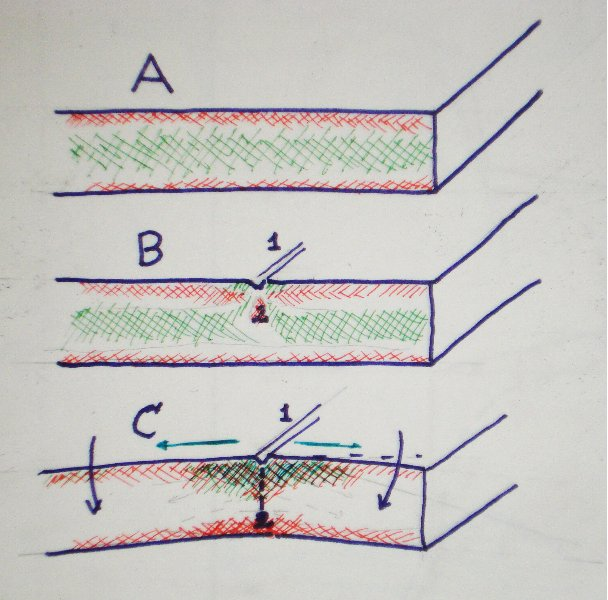

|  leikkauskuva |
A-kohdassa näkyy sivukuvana ehjässä lasissa luonnostaan olevat jännitykset. Ydin jatkaa jäähtymistä pidempään, ja sen myöhäisempi lämpökutistuminen aiheuttaa heikon puristuksen pinnoille ja vetojännityksen lasin sisään.
B-kohdassa näkyy että yläpinnan puristus on katkaistu viirulla (1), siihen jää heikko veto viirusta poispäin. Lasin sisälle syntyy painealue (2) ja vastaava vetojännitys sivusuuntaan. Tämä pyrkii aukaisemaan railoa.
Lasiveitsen rissa kohdistaa työpaineen hyvin pienelle alueelle. Paikallisesti, vajaan neliömillin alueella paine on niin suuri että se murskaa lasin pinnan, ja muodostaa painealueen syvemmälle. Jos viirun antaa olla avaamattomana, siihen syntyy mikrohalkeamia jotka purkavat painealueen jännitystä. Näin syntyy halkeaman alkuja väärään suuntaam. Leikkausöljy vähentää niiden syntymistä.
C-kohdassa loiva taivuttaminen (mustat nuolet) tuo paljon lisää vetoa yläpintaan (vihreät nuolet) ja puristusta alapintaan. Railon auetessa vedon vaikutuskohta siirtyy alemmas ja puristus (2) pienenee. Piioksidin verkko katkeilee säie kerrallaan, samalla tavalla kuin vetoketjua aukaisisi.